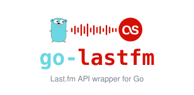

go-lastfm
A context-aware JSON client for the complete current Last.fm API
go get github.com/ndyakov/go-lastfm/v2
client, _ := lastfm.New("api-key", "shared-secret",
lastfm.WithUserAgent("my-app/1.0 (contact@example.com)"),
)
result, err := client.Artist.GetInfo(ctx, lastfm.ArtistInfoParams{
ArtistRef: lastfm.ArtistRef{Artist: "Björk", Autocorrect: true},
Language: "en",
})
if err != nil { log.Fatal(err) }
fmt.Println(result.Artist.Name)
- All 57 currently published Last.fm API methods, typed end to end
context.Contexton every call; timeouts and cancellation just work- Auth flows for sessions, scrobbling and write methods
- Zero dependencies beyond the standard library
- Live contract tests against the real API (opt-in), httptest everywhere else